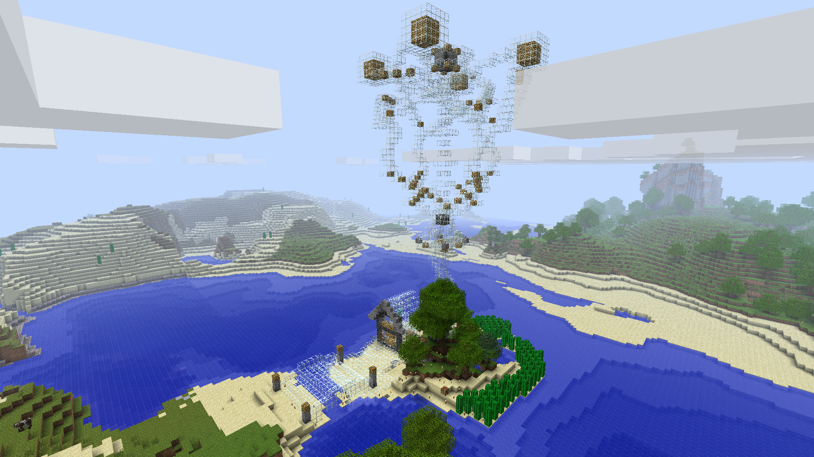
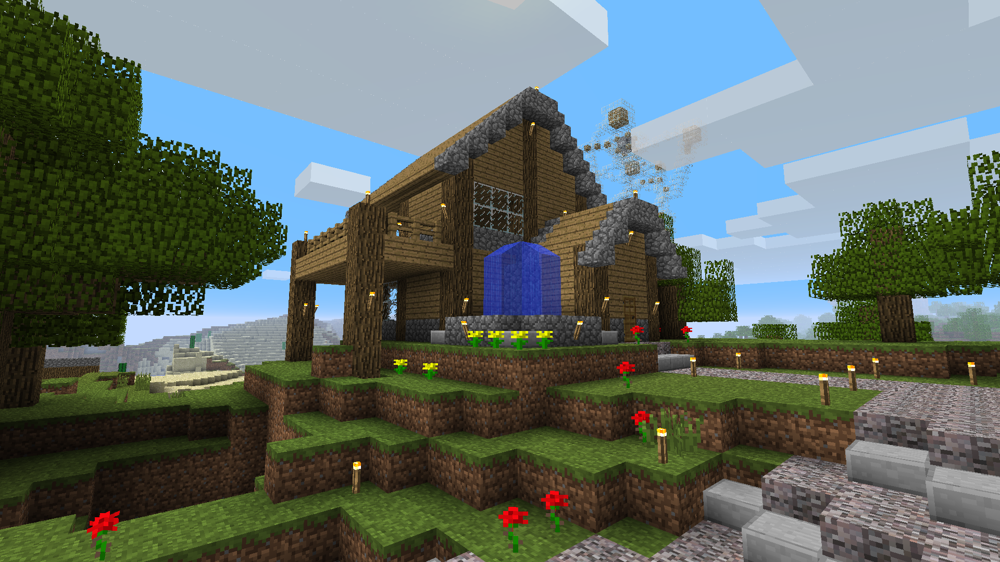
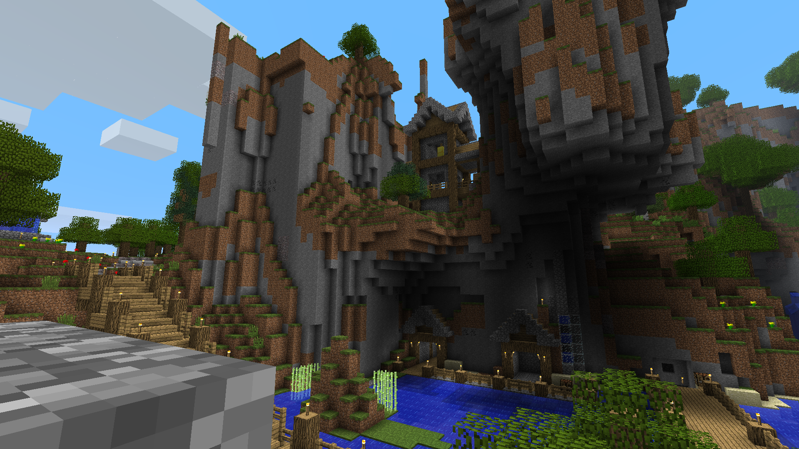
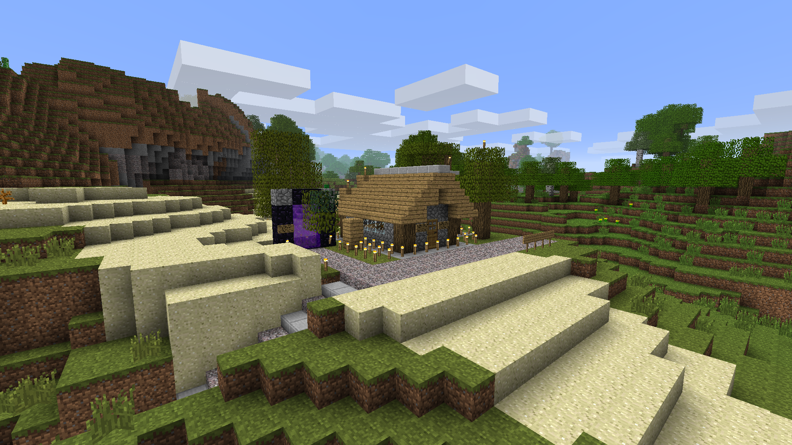
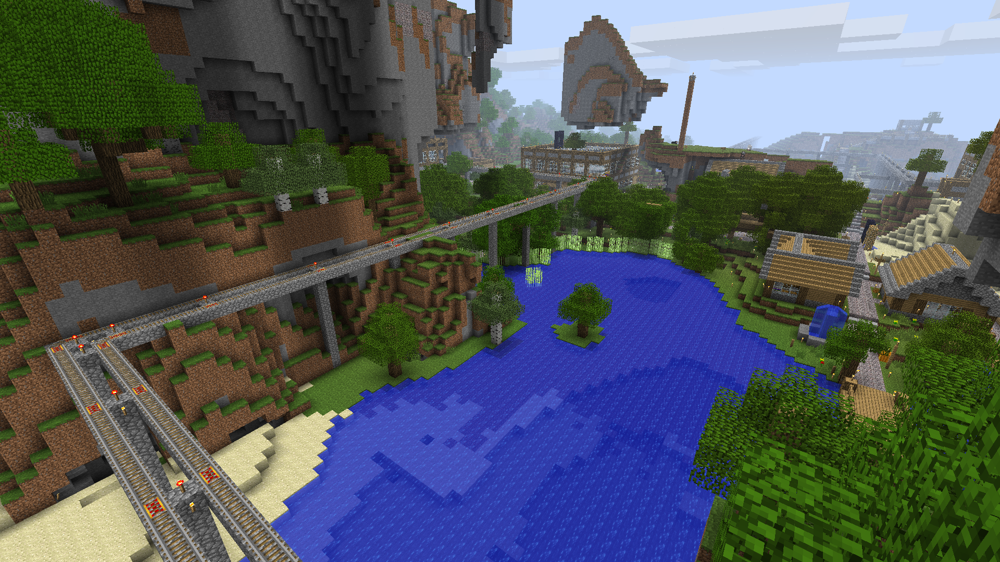

Our great Prime Minister, WorldWidePixel, has revealed that the
Republic of Panorama is built on the innovative System Whee.
System Whee combines the traditional political power system with
granting every citizen direct power, but the citizens' actions
must be aligned with a few ground rules set by the Prime Minister.
It's clear it's the best system that there's ever been, as Panorama
keeps growing economically and geographically as time passes.
We recently talked about the instant chatting platform
Pridecraft
Studios will be building on the CRSS Internet.
We would now like to announce "An Independent Organization" at
Strudel is working on a VoIP solution also
running on the CRSSi to assist
with Pridecraft's goals!
Scientists and astronauts have just discovered the age of our world:
It became two years old on July 10th, 2025 !
It's hard to imagine the very same studio we're writing from right
now was just a barren desert not so long ago. This calls for celebration!
But not at this specific moment.
We're excited to announce the marriage between Blurry and Pigu!
We can't really transcribe the event here, but you can watch
it right here.
Breaking News! Weird structures have suddenly appeared in
CRSS 3 !
Some structures, such as a glass house, a wooden house, and a
mountain house have suddenly appeared around the spawn area.




No one is sure how these got here, but some conspiracy theorists
say "They're structures from a lost 'CRSS2' world".
Of course, we all know there's CRSS 1 and CRSS 3, and there's no
logical explanation to have some other one between these.
Digital Landlord Workstation Software maker, "LandBab", has
announced a few days ago that they'll not only be discontinuing
their "WaketyCalk" software, but also take any land managed with
the software to themselves.
People are mad, but we ask that you stay calm and do as
they tell you.
It would be unethical to tell you that you can migrate your workflow
to Disableton and maintain ownership of your land, so we won't!
We're thrilled to announce that CRSS 3 inhabitants are working on a
transport system to take you around the worlds.

Not only that, it will be using the GREAT System for Route Information
available online and for semi-automatic fee processing.
The latter will only be available in CRSS 1.
It will use trains and train stations, and will take you to many
districts around the spawn area, as well as farther nations and
cities as those begin to form.
Thank you for reading this edition of Quartz News Network!
You can watch all other editions clicking here,
or read all other HTML editions clicking here.